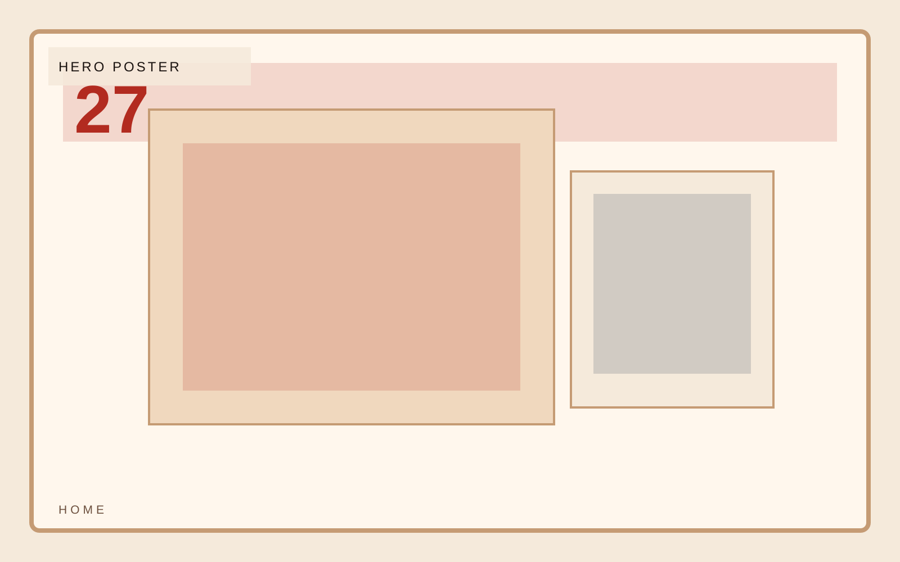
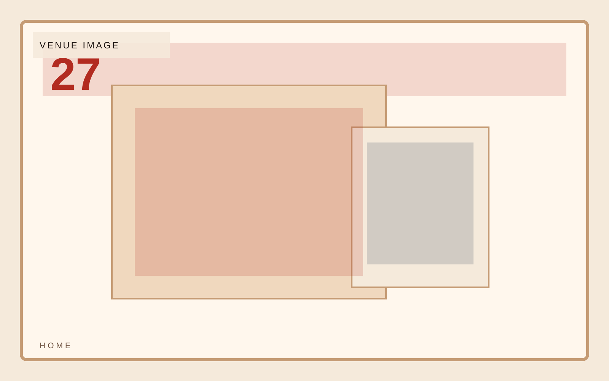
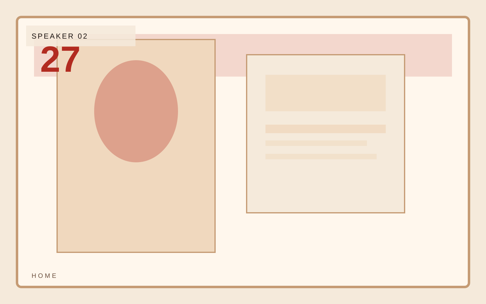

Format
One-night live program
Event launch
A campaign-driven event template built around bold date treatment, lineup rhythm, and a visual system that feels like design rather than conference software. The page should feel like a campaign poster translated into browser space.

Event launch
Date and location should feel like headline information, not metadata. This section should read like poster design with utility.

Event launch
Lineup needs hierarchy and rhythm. Every speaker or element should feel chosen, not dropped into a neutral grid.

Event launch
Agenda should make the event legible immediately in still frames. The sequence needs visual snap.
Event launch
The RSVP call should feel urgent and designed rather than like a default registration block.